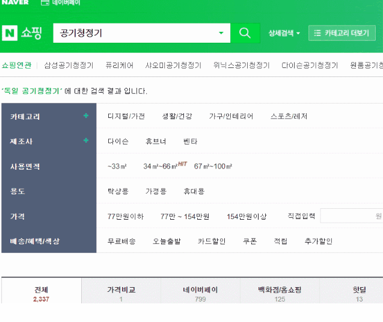
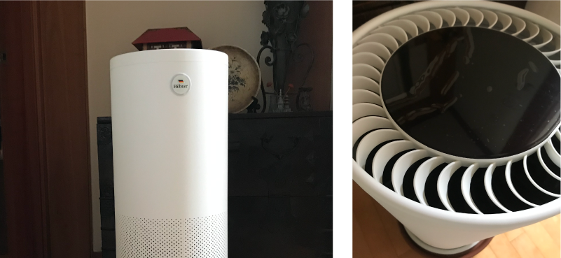
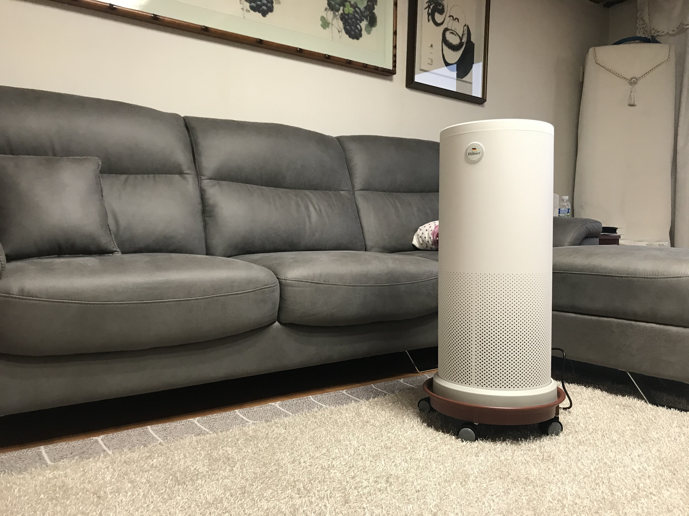
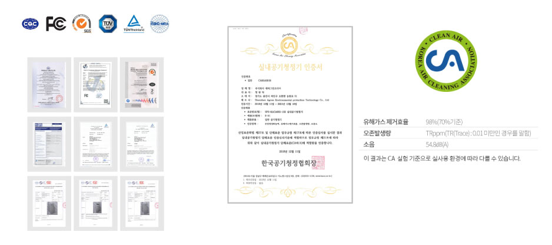
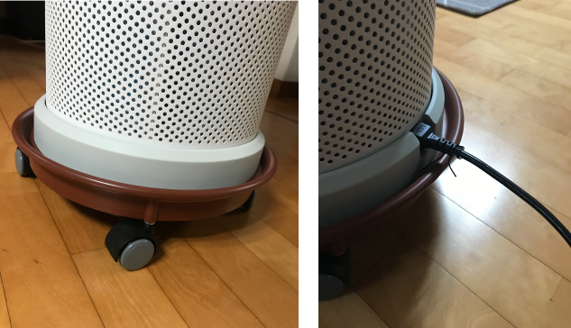

요즘 초미세먼지 혹은 오염불순 공기가 많아지면서 가족의 비염이 심했졌다. 그리고 밖을 못 나가서 집안에서 식사를 하다보니 음식할 때마다 탁해지는 공기가 엄마는 신경이 쓰였나보다. 엄마가 회사에서 공기청정기를 사용해보고 괜찮아서 집에도 한대를 구매해야겠다 마음을 먹었다고 한다.
사용면적은 ‘측정된 먼지 제거율=공기 청정 성능’을 나타내며 이를 소비자가 쉽게 알 수 있도록 소비자의 언어로 바꾼 것이다. 공기청정기의 '미세먼지 성능'은 동일한 '환경, 시간'동안 0.3µm미세먼지 제거율을 측정하여 결정된다.
* 공기청정기의 사용면적을 결정짓는 성능 수치는 청정화능력(CADR) 입니다. 청정화능력의 수치가 높을수록 사용면적 넓은 제품입니다.
CA인증 마크는 한국 공기청정 협회에서 테스트를 통해 성능 확인 후 발급하는 성능 인증마크입니다.
미세먼지, 유해가스제거 효과는 체감하기 어렵기 때문에 소비자는 제조사에서 제공하는 정보를 믿고 사용할 수 밖에 없는데 표기된 스펙 정보가 실제 성능보다 과장되어 있는 경우도 있다. 하지만 CA인증 제품은 중립적 기관에서 직접 테스트한 결과로 성능을 표기하기 때문에 객관적인 성능 체크가 가능하여 표기된 스펙에 대해 신뢰할 수 있다.
*KC마크(의무)가 안정성을 인증하는 것과 달리 공기청정기의 핵심 성능을 보장하는 성능 인증 마크이며 의무가 아니여서 미인증 제품도 있다.
등급이 높을수록 더 작은 미세먼지를 걸러내는 것은 아니며, 0.3µm의 미세먼지 제거율에 차이가 있을 뿐이다. 필터 등급이 E11등급 이상만 된다면 사용면적을 확인하여 구입하면 되며, 풍량이 약하면 오히려 먼지 제거 성능이 떨어진다. 필터 등급과 풍량의 세기를 종합적으로 같이 볼 필요가 있다.
*필터 등급이 E11이하인 경우 먼지제거효율이 떨어져 그만큼 풍량이 커지기 때문에 작동 소음이 커질 수 있다. 유의하시길.
3단계 공기청정 시스템으로 고효율 프리필터 + H13등급 헤파필터(2중 통합), GTP활동화 카본 단독필터가 미세한 먼지를 손쉽게 걸러내어 더욱 더 가력하고 상쾌한 공기를 공급해준다.
1단계 : 고효율 프리필터
2단계 : H13등급 HEPA필터
3단계 : GTP활동화 카본필터
고효율 프리필터는 메쉬구조의 향균섬유와 살균 부직포로 구성되어 있다. 먼지를 360도로 포착하여 먼지, 털같은 큰 입자를 필러터링 해준다. 그리고 2단계에서 PM2.5의 정화를 주로 하여, 꽃가루,먼지, 진드기같은 초미세먼지를 걸러주고 2차 오염을 방지 해준다. 마지막으로 3단계에서 새집증후군, 포름알데히드, 벤젠,크실렌,TVOC를 필처링 해 줌으로써 미세한 먼지까지 걸러내어준다.
일본 NIDEC사 고성능 속삭임보다 작은 소리5db 구매하게 된 결정적인 기능이기도 하다. 다른 공기청정기보다 수면모드 시 암전 및 5d이하의 소음으로 작동해 속삭이는 소리보다 작다고 한다. 실제 사용 시 거슬릴 정도는 아니지만 약간의 바람 소리만 들릴 뿐이었다.
한국공기청정협회의 꼼꼼하고 엄격한 테스트를 통하여 CA인증 마크를 획득하고, 세계적인 해외 인증기관들을 통한 테스트도 통과한 안심하고 사용할 수 있는 제품이다. 가습기의 문제때문에 불안감을 갖고 있는 부모님들에게 아주 믿음직한 이야기이다.
아무래도 30평 이상의 가정집에서 사용하다 보니 아빠 방 오빠 방 등 옮길 경우가 많은데 바퀴가 없는 게 흠이다. 그래서 바퀴 달린 받침대를 구매했다. 근데 옮길 때 코드 선의 접촉이 약해 자꾸 빠진다. 가동되다가도 옮기면 전원이 나가서 불편했다.
엄마가 불면증이라 예민한 편이라 작은 소리에도 잘 깬다. 근데 이 공기청정기를 밤에 틀어도 소리가 작아서 튼 줄도 몰랐다고 좋아하신다. 그리고 온도, 습도 표시창이 있어 습도도 보고 조절할 수 있어 공기의 변화를 알 수 있었다. 그걸 보고 우리집이 습도가 낮다는 것을 알게되었다.